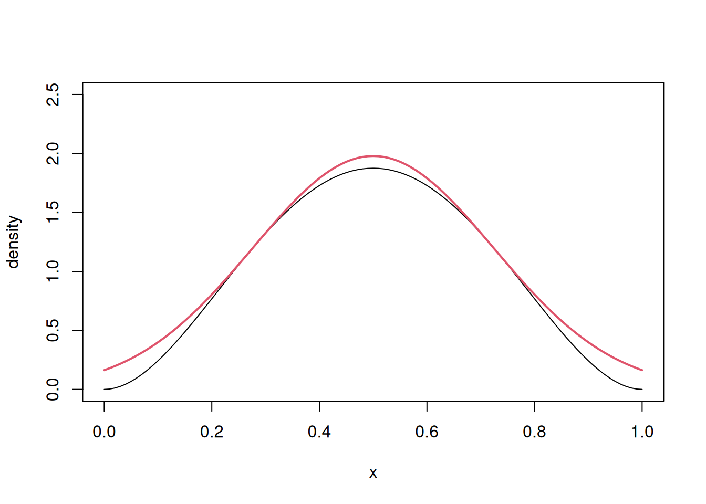
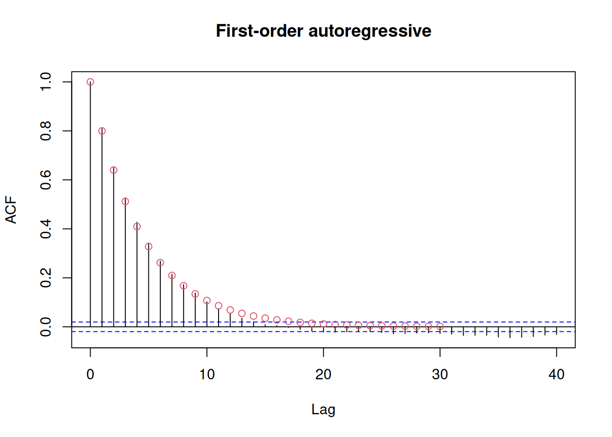

Consider a symmetric beta distribution and suppose we don’t know how to generate from it for a second… Since the mean is at \(0.5\), we could propose \(X \sim \mathsf{Gauss}(0.5, \sigma)\) or a truncated version thereof on [\(0,1\)].
We can compute the value of \(C^{\star} = \mathsf{argmin}_\sigma\mathsf{argmax}_xp(x)/q(x; \sigma)\) or equivalently of the difference of log densities, since this is more numerically stable. We do so below using numerical optimization.
logpx <-function(x){ dbeta(x, shape1 =3, shape2 =3, log =TRUE)}logqx <-function(x, sd0){ dnorm(x, mean =0.5, sd = sd0, log =TRUE)}# Find the worst case C for the Gaussian with sd = sd0opt_C <-function(sd0){ logC <-optimize(f =function(x){logpx(x) -logqx(x, sd0)}, maximum =TRUE, lower =0, upper =1)$objectiveexp(logC)}C_opt <-optimize(f = opt_C, lower =0, upper =100)# Best fitting standard deviation(sd0 <- C_opt$minimum)
[1] 0.2236243
(C <- C_opt$objective)
[1] 1.108928
We can compare the plot and the scaled proposal density, and see how
# Plot the curve and the proposalcurve(expr =dbeta(x, 3,3), from =0, to =1, ylab ="density",ylim =c(0, 2.5))curve(dnorm( x, 0.5, sd = sd0)*C, from =0, to =1, col =2, lwd =2, add =TRUE)

We could reduce \(C\) further by truncating the Gaussian to the unit interval, as some proposals fall outside. This probability, with the optimal value of \(\sigma_0\), is quite small.
pnorm(q =1, mean =0.5, sd = sd0) -pnorm(q =0, mean =0.5, sd = sd0)
[1] 0.9746412
All draws larger than 1 or smaller than 0 have probability zero since they are outside of the support of the beta distribution. We use rejection sampling and compute the acceptance rate, comparing the empirical with the theoretical value of 1/C
B <-1e4L # number of proposalsprop_qx <-rnorm(B, mean =0.5, sd = sd0)keep <--rexp(B) <logpx(prop_qx) -logqx(prop_qx, sd = sd0) -log(C)samp <- prop_qx[keep]mean(keep) # empirical acceptance rate
[1] 0.9026
1/ C #theoretical acceptance rate
[1] 0.9017716
Finally, we can check through standard methods that the samples we obtain indeed follow a beta distribution, below using a Kolmogorov-Smirnov test and looking at the quantile-quantile plot.
# Compute reciprocal of bound CrecipC <-sapply(a_seq, function(a){integrate(f =function(x){ a *exp(-x^2/2+ a^2/2)}, lower = a, upper =Inf)$value})1/recipC
[1] 1.009809 1.002488 1.001109 1.000624 1.000400
Importance sampling
Here, we showcase the use of a rather exotic mixture model to reduce the variance of the Monte Carlo estimator of the variance of a symmetric beta distribution.
B <-2e4L; alpha <-1.5; factor <-3# Mode at the mean 0.5X0 <-rbeta(n = B, alpha, alpha)px <-function(x){dbeta(x, alpha, alpha)}# Importance sampling density - mixture of two betas (alpha, factor*alpha)X1 <-ifelse(runif(B) <0.5,rbeta(B, alpha, factor*alpha), rbeta(B, factor*alpha, alpha))qx <-function(x){0.5*dbeta(x, alpha, factor*alpha) +0.5*dbeta(x, factor*alpha, alpha)}# Function to integrate - gives variance of a symmetric beta distributiong <-function(x){(x -0.5)^2}# Weights for importance samplingw <-px(X1)/qx(X1)
# Monte Carlo integrationmc_est <-mean(g(X0))mc_var <-var(g(X0))/B# Importance sampling weighted mean and varianceis_est <-weighted.mean(g(X1), w = w) # equivalent to mean(g(X1)*w)/mean(w)is_var <-sum(w^2*(g(X1) - is_est)^2)/ (sum(w)^2)# True value for the beta varianceth_est <-1/(4*(2*alpha+1))# Point estimates and differencesround(c(true = th_est, "monte carlo"= mc_est, "importance sampling"= is_est),4)
true monte carlo importance sampling
0.0625 0.0627 0.0623
# Ratio of std. errors for meansmc_var/is_var # value > 1 means that IS is more efficient
[1] 1.105934
Estimation of the standard error
We consider a simple \(\mathsf{AR}(1)\) process with \(\phi=0.8\) and \(\sigma=2.\) The latter could be simulated recursively, but we opt her for standard R functions.
B <-1e4Lsigma <-2phi <-0.8x <-arima.sim(model =list(ar = phi), n = B,rand.gen = rnorm, sd = sigma) # std. deviation of innovationsvar(x)
[1] 11.76366
We notice that the estimated variance is not \(\sigma^2\)! The estimated sample variance equals (up to Monte Carlo precision) the theoretical value of the unconditional variance for the \(\mathsf{AR}(1)\), namely \(\sigma^2/(1-\phi^2).\)
The autocorrelation at lag \(h\) is \(\phi^h.\) We can compare the sample correlogram with the theoretical value. There is some noise for large lags, due in part to the smaller sample size. Here, since \(B\) is very large, everything is well estimated.
acf_x <-acf(x, main ="First-order autoregressive")points(0:30, 0.8^(0:30), type ="p", col =2)

We can get the theoretical effective sample size (ESS) from the formula for the unconditional variance, and by calculating the geometric series. From this, we can also retrieve the standard error for the sample mean of the \(B\) draws:
ess_factor_ar1 <-1/ (-1+2/ (1- phi))uncond_var_ar1 <- sigma^2/ (1- phi^2)# Compare with var(x)se_mean_ar1 <-sqrt(uncond_var_ar1 / B / ess_factor_ar1)
The first method uses the overlapping batch means, which is not recommended. Here, we build groups of size 40, which is sufficient since the autocorrelation tails of quickly.
sqrt(c(mcmc::olbm(x, batch.length = niter /40)))
[1] 0.0930506
Overlapping batch means are not recommended. Rather, Geyer (1992) recommends using the initial sequence method on the batch means output.
# Initial convex sequence of Geyer (1992)geyer_con_var <- mcmc::initseq(x)$var.conse2 <-sqrt(geyer_con_var / B)ess2 <-var(x) / geyer_con_var * B# Also posterior::ess_basic() for Stan outputposterior::ess_basic(matrix(x, ncol =1))
[1] 1149.992
The other estimators are based on spectral analysis, due to Heidelberg and Welch (1981). We estimate the spectrum at frequency zero to get the variance (with the adjustment factor and scale the latter by \(B\) to get the variance of the sample mean.
We show below the result of fitting the parametric \(\mathsf{AR}(p)\) approximation and using the spectra of the latter; the proposal from Heidelberg and Welch is implemented in coda::spectrum0.
ar_mod <-ar.yw(x)# Compute the unconditional variance of the AR process# # $var.pred is the variance of the innovations# Formula for the spectrum of AR(p) at 0# see, e.g., Percival and Walden, 2020, eq. 446buvar <- ar_mod$var.pred / (1-sum(ar_mod$ar))^2se3 <-sqrt(uvar / B) # variance of sample mean of AR(p)ess3 <-var(x) / uvar *length(x)# directly via coda::effectiveSize# The methodology from Heidelberg and Welch rather fits a# gamma GLM to the log periodogram with a polynomial trendcoda::spectrum0(x)